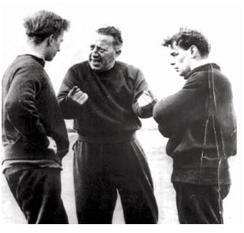

Chương 9

Năm 1950, Louis Rocca, tuyển trạch viên trưởng của Manchester United, qua đời. Có cặp mắt xanh trong việc tuyển lựa nhân tài, song về những năm cuối đời, Rocca không còn tinh tường như trước. Vả lại, ông thuộc về lớp người xưa, chỉ muốn bảo thủ những giá trị cũ, không thích sự thay đổi. Sau khi Rocca ra đi, Matt Busby liền bắt tay vào công cuộc cải cách, kiện toàn, chuyên nghiệp hóa và hiện đại hóa hệ thống tuyển trạch cũng như đào tạo trẻ tại CLB. Ông cho tăng số lượng truyển trạch viên, mở rộng phạm vi tìm kiếm tài năng ra khắp lãnh thổ Đại Anh Quốc, đồng thời bổ nhiệm Joe Armstrong vào vị trí cũ của Rocca. Armstrong là người năng nổ, lại khéo ăn khéo nói. “Đánh hơi” được nơi nào có cầu thủ nhí triển vọng, ông đích thân tìm tới ngay. Tới rồi thì chịu khó khề khà ngồi “tám” với bà mẹ, sau đó rủ ông bố đi nhậu một chầu;nếu cần thì xuất tiền mua tặng gia đình một cái máy giặt, tủ lạnh gì đấy, hay tặng họ vé đi du lịch miễn phí. Bậc phụ huynh mẹ nào cũng phải xiêu lòng trước một người vừa tâm lý, dẻo miệng, vừa chịu chi tiền như Armstrong, đồng ý cho con mình vào lò United.Chẳng bao lâu, hàng loạt cầu thủ trẻ đầy tiềm năng đã cập bến Old Trafford: Dennis Viollet, Jackie Blanchflower, Jeff Whitefoot…
Nhiệm vụ Armstrong là phát hiện tiềm năng; còn đào tạo, phát huy những tiềm năng ấy là việc của Jimmy Murphy, với sự cộng tác của trợ huấn[1] Bert Whalley. Người ta thường gọi thế hệ cầu thủ United xuất chúng những năm 1950 là “đồng ấu Busby” (Busby babes). Thực ra, Murphy mới là người đào tạo ra thế hệ này. Busby chỉ tập trung vào đội một, hiếm hoi lắm mới bước chân xuống đội trẻ. Cầu thủ trẻ tiến triển ra sao, ai tiến bộ, ai đi lùi, ông không nắm được, mà hoàn toàn dựa vào Murphy. Loại thải ai, tiến cử ai là quyền ở Murphy. Hễ Murphy thông báo “Cầu thủ X đã đủ sức lên đội một”, Busby sẽ lập tức cất nhắc cầu thủ đó.
Người hâm mộ Manchester United ít biết đến Jimmy Murphy; những người biết thì không phải ai cũng đánh giá ông đúng mức. Trong suốt chiều dài lịch sử United, Murphy chính là một trong những nhân cách đáng kính trọng nhất. Ông tận tụy, cống hiến, nhưng khiêm tốn, thủ thường, chấp nhận luôn đứng đằng sau làm người hùng thầm lặng, không thích bước ra dưới ánh hào quang. Murphy một tay gây dựng nên cả thế hệ huyền thoại, lại cũng một tay chèo chống,giúp con thuyền United đứng vững sau thảm họa 1958. Tài năng của Murphy được khắp nơi biết đến, nhiều CLB lớn đánh tiếng mời ông về làm HLV trưởng. Nếu nhận lời, nhiều khả năng ông cũng xây dựng được sự nghiệp lừng lẫy không kém Matt Busby. Thế mà ông từ chối tất cả, vui lòng đứng trong hậu trường, cả đời làm nhân vật số hai.

Jimmy Murphy (giữa) đang chỉ đạo cầu thủ (Ảnh:Football.ua)
Tính cách sôi nổi, quyết liệt, Jimmy Murphy luôn đòi hỏi học trò cố gắng đến mức tối đa. Muốn thành công, theo ông, chỉ có một phương cách duy nhất là khổ luyện. Trên sân tập, Murphy đóng vai hung thần, liên tục la hét, đốc thúc người nọ người kia, mỗi khi nóng lên thì văng tục như súng liên thanh, thậm chí cho học trò ăn đòn. Dưới sự dẫn dẳt của ông, các cầu thủ luôn phải vắt tới từng giọt mồ hôi cuối cùng. Sau mỗi buổi tập, họ thở không ra hơi, quần áo, mặt mũi bê bết những bùn đất như vừa về từ chiến trường! Thép đã tôi thế đấy!
Bên ngoài sân cỏ, các cầu thủ trẻ cũng phải tuân thủ kỷ luật gắt gao. Họ được (hay bị) giao nhiệm vụ đánh giày cho đàn anh, lau sàn, và cọ nhà vệ sinh. Đội trẻ được chia ra nhiều nhóm nhỏ, mỗi nhóm chừng chục người ở chung nhà trọ với nhau. Quản lý nhà trọ là những bà nội trợ kỹ tính, đã được CLB tuyển lựa kỹ càng. Mấy bà này hằng ngày nấu ăn và giặt giũ cho cầu thủ, cùng lúc để ý theo dõi sát sao hạnh kiểm của họ, nếu có vấn đề gì sẽ báo cáo ngay lên các thầy.
Ở cùng nhà, ăn cùng mâm, mỗi ngày ra sân cùng nhau. Cứ thế nhiều năm trời, giữa các chàng trai trẻ hình thành sự gắn bó vô cùng mật thiết, một sự gắn bó không thể có nếu CLB chỉ biết vung tiền mua cầu thủ đem về gắn ghép tạm bợ. “United sở dĩ mạnh là nhờ tinh thần đồng đội”, Dennis Viollet nhớ lại, “Chúng tôi trưởng thành bên nhau qua các đội trẻ. Từ năm 16, tôi đã đến Old Trafford, chơi bóng cạnh Roger Byrne, Eddie (Colman) và Duncan lớn (Edwards). Thật ra, phải nói là chúng tôi yêu thương nhau, chứ tinh thần đồng đội thôi cũng chưa đủ. Jimmy Murphy và Bert Whalley đã truyền cho chúng tôi niềm say mê, sống chết cùng bóng đá.”
Đặt niềm tin vào sức trẻ, Matt Busby cho các “cậu bé” của mình xung trận từ rất sớm. Tháng 12, 1949, thủ thành 18 tuổi Ray Wood ra mắt tại United. Năm 1950, đến lượt Jeff Whitefoot (16) và Mark Jones (17). Năm 1951 là Roger Byrne (21) và Jackie Blanchflower (18). Trong số này, Roger Byrne gây ấn tượng mạnh nhất. Sở trường vị trí hậu vệ trái, nhưng trong nửa sau mùa giải 1951-1952, Byrne được đôn lên chơi tiền đạo trái. Anh thể hiện phong độ xuất sắc, ghi 7 bàn thắng, góp công cùng các cựu binh thế hệ 1939 đưa United lên ngôi VĐQG. Đá hay như vậy, song Byrne không chịu cắm luôn trên hàng công, mà nhất quyết đòi về tuyến dưới, dọa rằng nếu không được làm hậu vệ, sẽ bỏ Old Trafford mà đi. Sau cùng, BHL phải chiều ý Byrne. Năm 1955, anh tiếp quản băng thủ quân United từ Allenby Chilton, và sẽ giữ băng này đến ngày qua đời.
Sau chức vô địch năm 1952, các cựu binh lần lượt ra đi. Matt Busby không có nhiều tiền để tái thiết đội hình, bởi lúc này chủ tịch Gibson đã từ trần. Thừa kế tài sản từ chồng, bà Violet Gibson trở thành cổ đông lớn nhất tại Old Trafford. Rủi thay, bà này không mê bóng đá, nên chỉ ngồi ôm cổ phần, không quan tâm, đầu tư gì cho United. Cũng may, với lực lượng trẻ cực kỳ hùng hậu, CLB chẳng cần vung tiền mua thêm nhiều cầu thủ. Busby chỉ đem về vài gương mặt mới như Tommy Taylor từ Barnsley, và Johnny Berry từ Birmingham.
Nói là “cực kỳ hùng hậu”, bởi sau lứa Roger Byrne mới ra ràng, được lên chinh chiến trên Hạng Nhất, hãy còn một lứa tiềm năng khác đang trui rèn ở đội trẻ. Lứa này giúp United giành Cúp FA trẻ mùa 1952-1953, khi cúp này được tổ chức lần đầu tiên. Đội hình đăng quang năm đó gồm những gương mặt ưu tú như: Eddie Colman, Duncan Edwards, Billy Whelan, David Pegg và Albert Scanlon.
Chưa hết, từ 1953 đến 1957, United liên tiếp 5 lần đoạt Cúp FA trẻ. Đội không chỉ thắng, mà thắng vô cùng hoành tráng, cuốn phăng mọi đối thủ với những tỷ số như 10-0, 20-0. Trận thắng đậm nhất là…23-0 trước Nantwich nhằm ngày 4 tháng 11, 1952 (Pegg, Doherty và Edwards mỗi người ghi 5 bàn, Eddie Lewis ghi 4 bàn). Thêm vào đó, các năm 1954 và 1957, United hai lần vô địch giải Blue Stars, tức cúp thế giới các đội trẻ CLB (tiền thân của FIFA Youth Cup). Cứ mỗi mùa, Old Trafford lại trình làng thêm một số gương mặt mới đầy triển vọng: Bobby Charlton, Wilf McGuinness, Shay Brennan, David Gaskell[2]…Đội trẻ CLB chơi hay đến độ nhiều trận đấu thu hút được tới hàng chục ngàn khán giả.
Giữa hàng loạt cầu thủ trẻ xuất sắc của United, báo giới và CĐV chú ý nhất một người. Tháng 4, 1953, khi người này sắp sửa ra mắt trận đầu trên đội một, tờ Daily Herald viết “Manchester United đã có bom nguyên tử; giờ đây họ đang chờ bom phát nổ”. Nói về người này, huyền thoại Bobby Charlton cũng phải cúi mình: “So với anh ấy, tất cả chúng tôi chỉ là mọi lùn!”
Vâng, còn ai khác ngoài Duncan Edwards?
Edwards thường được gọi là Duncan “lớn”, lại có biệt danh “người khổng lồ”, tuy anh chỉ cao 1m80, nặng khoảng 82 kg. Không quá cao, không quá to, song Edwards sở hữu một thân hình “kim cương bất hoại”, cường tráng, cuồn cuộn những cơ bắp. Người ta hay đùa: Chỉ cần anh vén quần, để lộ cặp đùi “trơ như sắt, cứng như đồng”, đối phương sẽ hoảng hồn bỏ chạy ngay, không cần đấu đá gì nữa.Thời còn đi học, Edwards đã nổi danh thần đồng túc cầu, được Bolton, Arsenal và Wolves tranh nhau trải thảm đỏ mời về. Jimmy Murphy và Joe Armstrong phải đến tận nhà Edwards, năn nỉ mẹ anh, hứa mua tặng bà cái máy giặt, mới cắt đuôi được các CLB trên.
Dĩ nhiên, nhiều cầu thủ khác cũng có thân hình cường tráng. Điểm khác biệt nơi Edwards là anh không chỉ biết “hùng hục như trâu”, mà còn chơi bóng với cái đầu. Ở Edwards có tất cả: Thể lực sung mãn, nhãn quan chiến thuật sắc sảo, lối chơi tinh tế, bản năng thủ lĩnh, và tinh thần quyết tâm ngút trời. Sở trường tiền vệ, nhưng Edwards có thể chơi bất cứ nơi đâu, vị trí nào cũng tốt. Trước những trận cầu lớn, trong khi đồng đội đứng ngồi không yên, Edwards luôn bình thản, tự tin. Trận cầu càng lớn bao nhiêu, anh càng hứng khởi bấy nhiêu.
Vừa gia nhập đội trẻ ở tuổi 15, Edwards lập tức chiếm vai trò nhạc trưởng trên sân, các đàn anh 17-18 tuổi ai cũng phải nể phục. “Nếu các cầu thủ khác là những viên ngọc trên vương miện, thì Duncan là hạt kim cương nơi chính giữa”, Jimmy Murphy nhận xét, “Mỗi khi xem TV, thấy Muhammad Ali[3] tự nhận mình vĩ đại nhất, tôi chỉ buồn cười. Vĩ đại nhất chỉ có một người: Chính là Duncan Edwards.”
Ngày 4 tháng 4, 1953, mới hơn16 tuổi, Edwards ra mắt trong màu áo đội một United. Ngày 2 tháng 4, 1955, ở tuổi 18, anh chơi trận đầu cho tuyển Anh, trở thành tuyển thủ quốc gia trẻ nhất khi ấy. Edwards xin thầy Busby cho mình chơi song song ở cả đội hình chính lẫn đội trẻ, vì tình yêu anh giành cho bóng đá quá lớn, không lúc nào muốn ngừng nghỉ.

Duncan Edwards (Ảnh: Pinterest.com)
Chú thích:
[1] Các danh từ manager, assistant manager, và coach/trainer, chúng tôi lần lượt dịch là: HLV, trợ lý HLV, và trợ huấn.
[2]Gaskell cần được nhắc đến, vì thủ thành này giữ kỷ lục cầu thủ trẻ nhất từng khoác áo United: 16 tuổi 19 ngày trong trận thắng Manchester City 1-0 vào tháng 10, 1956.
[3] Muhammad Ali: VĐV quyền anh nổi tiếng người Mỹ, 3 lần vô địch hạng nặng thế giới.